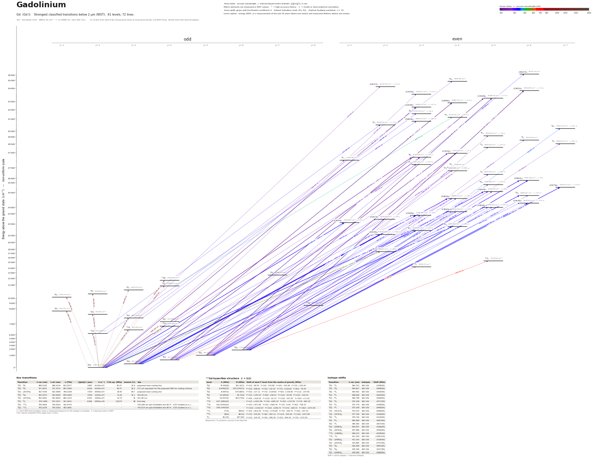

Gadolinium energy level diagram
Energy levels and transitions of neutral gadolinium (Gd I): the 60 strongest classified lines below 2 µm from the NIST Atomic Spectra Database and the 61 levels they connect, each line with its vacuum wavelength, frequency and, for 22 of them, the reduced dipole matrix element derived from the NIST transition rate. Measured lifetimes, transition rates, hyperfine constants and isotope shifts from the literature are included, each with its citation. 12 further lines lead from the ground level to a long-lived level (the NIST level list has no lower level that an electric-dipole decay could reach). The NIST line list does not carry them: the wavelength follows from the two level energies, the type is the lowest multipole that J and parity allow (M1, E2, M2, or J = 0 – 0), and no rate is given.
Hover a line or a level to isolate it, click to keep it selected. Scroll to zoom, drag to move.

Download: diagram (PDF) diagram (SVG) diagram (PNG) transitions (CSV) levels (CSV) all data of this page (JSON) source code


Gadolinium lines in brief
- Gd 9D°2 → 9P3 (proposed laser-cooling line (368 nm, 9D°2 - 9P3); not closed: the upper level also decays to 9D°3 (371 nm) and 9D°4, so a repumper at 371 nm is needed (Battles thesis 2020; proposal, no experiment)): 368.5183 nm in vacuum, 368.4134 nm in air, 813.5077 THz; Einstein A = 9.1 × 107 s⁻¹ (NIST); lifetime of the upper level 3.5 ns (measured).
- Gd 9D°3 → 9P3 (371 nm repumper for the proposed 368 nm cooling scheme (Battles thesis 2020)): 371.4631 nm in vacuum, 371.3575 nm in air, 807.0584 THz; Einstein A = 9.2 × 107 s⁻¹ (NIST); lifetime of the upper level 3.5 ns (measured).
- Gd 9D°6 → (25376)7 (proposed laser-cooling line (423 nm, J = 6 -> 7, treated as closed two-level system for the bosonic isotopes; Battles thesis 2020; proposal, no experiment); also the reference line of King plots (422 nm)): 422.7038 nm in vacuum, 422.5848 nm in air, 709.2258 THz; Einstein A = 8.9 × 107 s⁻¹ (NIST); lifetime of the upper level 9.4 ns (measured).
- Gd 9D°2 → 9D3 (443.06 nm (air) line addressed in a Zeeman-slower experiment with a broadband 447.1 nm diode laser (Chavarría-Sibaja et al. 2021)): 443.1873 nm in vacuum, 443.0629 nm in air, 676.4464 THz; Einstein A = 3 × 107 s⁻¹ (NIST); lifetime of the upper level 13.7 ns (measured).
- Gd 9D°3 → (22335)2 (451.96 nm (air) line addressed in a Zeeman-slower experiment with a broadband 447.1 nm diode laser (Chavarría-Sibaja et al. 2021)): 452.0922 nm in vacuum, 451.9654 nm in air, 663.1224 THz; Einstein A = 3.8 × 107 s⁻¹ (NIST); lifetime of the upper level 10.8 ns (measured).
- Gd 9D°2 → 9F2 (first step (575.19 nm) of the LLNL 575.190 -> 581.037 -> 623.347 nm three-step photoionization scheme for gadolinium laser isotope separation): 575.3466 nm in vacuum, 575.1871 nm in air, 521.0641 THz; Einstein A = 6.86 × 105 s⁻¹ (measured); lifetime of the upper level 700 ns (measured).
- Gd 9D°4 → 11F3 (726.266 nm spin-forbidden line 9D°4 - 11F3 studied as a candidate for narrow-line laser cooling / optical clock work (Adhikari et al. 2019)): 726.4626 nm in vacuum, 726.2624 nm in air, 412.6743 THz.
- Gd 9D°6 → 11F5 (743.014 nm spin-forbidden line 9D°6 - 11F5 studied as a candidate for narrow-line laser cooling / optical clock work; King-plot nonlinearity reported (Adhikari et al. 2019)): 743.2229 nm in vacuum, 743.0183 nm in air, 403.3681 THz.
Wavelengths and frequencies from the NIST level energies unless a measured frequency is listed below; every number is repeated with its source in the tables of this page.
Key transitions of gadolinium
| Transition | λ vac (nm) | λ air (nm) | ν (THz) | |⟨J‖er‖J′⟩| (ea₀) | A (s⁻¹) | Γ/2π up. (MHz) | branch (%) | Use |
|---|---|---|---|---|---|---|---|---|
| 9D°2 – 9P3 | 368.5183 | 368.4134 | 813.5077 | 3.967 | 9.100e+07 | 45.47 | 31.9 | proposed laser-cooling line |
| 9D°3 – 9P3 | 371.4631 | 371.3575 | 807.0584 | 4.036 | 9.200e+07 | 45.47 | 32.2 | 371 nm repumper for the proposed 368 nm cooling scheme |
| 9D°6 – (25376)7 | 422.7038 | 422.5848 | 709.2258 | 7.054 | 8.900e+07 | 16.93 | 83.7 | proposed laser-cooling line |
| 9D°2 – 9D3 | 443.1873 | 443.0629 | 676.4464 | 3.004 | 3.000e+07 | 11.62 | 41.1 | 443.06 nm |
| 9D°3 – (22335)2 | 452.0922 | 451.9654 | 663.1224 | 2.944 | 3.800e+07 | 14.74 | 41 | 451.96 nm |
| 9D°2 – 9F2 | 575.3466 | 575.1871 | 521.0641 | 0.568 | 6.855e+05 | 0.2274 | 48 | first step |
| 9D°4 – 11F3 | 726.4626 | 726.2624 | 412.6743 | – | – | – | – | 726.266 nm spin-forbidden line 9D°4 - 11F3 studied as a c… |
| 9D°6 – 11F5 | 743.2229 | 743.0183 | 403.3681 | – | – | – | – | 743.014 nm spin-forbidden line 9D°6 - 11F5 studied as a c… |
λ, ν from NIST level energies unless a measured frequency for this isotope is available. A: measured value or NIST. Γ/2π: natural linewidth of the upper level, 1/(2πτ).
157Gd hyperfine structure (I = 3/2)
| Level | A (MHz) | B (MHz) | Shift of each F level from the centre of gravity (MHz) |
|---|---|---|---|
| 9D°2 | 47.959(8) | 191.16(7) | F=1/2: -48.55 F=3/2: -143.88 F=5/2: -143.46 F=7/2: +191.67 |
| 9D°3 | 6.4456(22) | -433.234(13) | F=3/2: -298.61 F=5/2: +42.42 F=7/2: +216.62 F=9/2: -79.30 |
| 9D°4 | -8.997(5) | -375.88(4) | F=5/2: -117.11 F=7/2: +109.82 F=9/2: +159.95 F=11/2: -147.95 |
| 9D°5 | -15.095(4) | 44.74(4) | F=7/2: +155.25 F=9/2: +58.23 F=11/2: -32.99 F=13/2: -102.03 |
| 9D°6 | -16.057(6) | 623.27(6) | F=9/2: +416.50 F=11/2: -61.37 F=13/2: -257.81 F=15/2: +11.30 |
| 11F°2 | -227.1080(20) | – | F=1/2: +1021.99 F=3/2: +681.32 F=5/2: +113.55 F=7/2: -681.32 |
| 11F°3 | -161.9330(20) | – | F=3/2: +971.60 F=5/2: +566.76 F=7/2: -0.00 F=9/2: -728.70 |
| 11F°8 | -106.1240(20) | – | F=13/2: +1432.67 F=15/2: +636.74 F=17/2: -265.31 F=19/2: -1273.49 |
| 11F3 | -77(5) | 590(4) | F=3/2: +813.30 F=5/2: +179.68 F=7/2: -294.75 F=9/2: -197.32 |
| 11F5 | 84(4) | 967(4) | F=7/2: -335.94 F=9/2: -587.13 F=11/2: -303.02 F=13/2: +871.08 |
| 9F2 | 95.100 | 347.000 | F=1/2: -124.33 F=3/2: -285.30 F=5/2: -264.43 F=7/2: +372.05 |
Measured A, B constants; sources in the data file.
Isotope shifts
| Transition | λ vac (nm) | Isotopes | Shift (MHz) |
|---|---|---|---|
| 9D°5 – 7F5 | 364.753 | 160-156 | -2398(90) |
| 7D°3 – 9G4 | 364.827 | 160-156 | -2998(90) |
| 9D°6 – 9F5 | 364.952 | 160-156 | -3328(90) |
| 9D°2 – 9F1 | 368.606 | 160-156 | -3628(90) |
| 9D°2 – 9F3 | 369.798 | 160-156 | -3598(90) |
| 9D°6 – 9F6 | 370.199 | 160-156 | -4077(90) |
| 9D°3 – 9F4 | 372.776 | 160-156 | -3298(90) |
| 9D°6 – 9F7 | 373.338 | 160-156 | -2998(90) |
| 7D°3 – (34147)2 | 374.243 | 160-156 | -2998(90) |
| 7D°4 – (33705)3 | 377.790 | 160-156 | -3328(90) |
| 9D°4 – 7F4 | 379.746 | 160-156 | -3418(90) |
| 9D°5 – 9F4 | 383.999 | 160-156 | -3687(90) |
| 9D°5 – 7F5 | 390.382 | 160-156 | -3927(90) |
| 9D°3 – (24850)4 | 405.937 | 160-156 | -3298(90) |
| 9D°4 – (25044)5 | 407.986 | 160-156 | -3658(90) |
| 11F°2 – (30809)3 | 409.312 | 160-156 | -2638(90) |
| 11F°2 – 9F2 | 411.240 | 160-156 | -1199(150) |
| 9D°4 – (24850)4 | 411.243 | 160-156 | -3328(90) |
| 9D°5 – (25044)5 | 415.895 | 160-156 | -3747(90) |
| 7D°3 – 7D3 | 418.396 | 160-156 | -3897(90) |
| 9D°5 – 9G6 | 419.196 | 160-156 | -4227(90) |
| 9D°5 – (24850)4 | 419.280 | 160-156 | -2998(90) |
Shift = ν(first isotope) − ν(second isotope).
Listed Gd transitions below 2 µm
| Lower level | Upper level | λ vacuum (nm) | λ air (nm) | ν (THz) | Type | |⟨J‖er‖J′⟩| (ea₀) | A (s⁻¹) | Branching (%) | Source of matrix element / A |
|---|---|---|---|---|---|---|---|---|---|
| 9D°4 | (33348)5 | 304.7364 | 304.6477 | 983.7764 | E1 | 1.341 measured | 1.170e+07 measured | 8.42 | Lawler, Bilty, Den Hartog, J. Phys. B 44, 095001 (2011), Table 6 (printed portion, p. 7) |
| 9D°3 | (32886)4 | 306.0804 | 305.9915 | 979.4565 | E1 | 1.173 measured | 1.080e+07 measured | 10.2 | Lawler, Bilty, Den Hartog, J. Phys. B 44, 095001 (2011), Table 6 (printed portion, p. 7) |
| 9D°2 | (32448)3 | 308.1843 | 308.0949 | 972.7699 | E1 | 0.732 measured | 5.300e+06 measured | 6.2 | Lawler, Bilty, Den Hartog, J. Phys. B 44, 095001 (2011), Table 6 (printed portion, p. 7) |
| 9D°5 | (33348)5 | 309.1276 | 309.0378 | 969.8018 | E1 | 1.037 measured | 6.700e+06 measured | 4.82 | Lawler, Bilty, Den Hartog, J. Phys. B 44, 095001 (2011), Table 6 (printed portion, p. 7) |
| 9D°6 | (33852)6 | 311.2091 | 311.1188 | 963.3153 | E1 | 1.792 measured | 1.660e+07 measured | 12.6 | Lawler, Bilty, Den Hartog, J. Phys. B 44, 095001 (2011), Table 6 (printed portion, p. 7) |
| 9D°5 | 7F5 | 364.7531 | 364.6492 | 821.9051 | E1 (intercombination) | – | – | – | – |
| 7D°3 | 9G4 | 364.8268 | 364.7228 | 821.7392 | E1 (intercombination) | – | – | – | – |
| 9D°6 | 9F5 | 364.9519 | 364.8480 | 821.4574 | E1 | – | – | – | – |
| 9D°2 | 9P3 | 368.5183 | 368.4134 | 813.5077 | E1 | 3.967 NIST | 9.100e+07 NIST | 31.9 | NIST ASD (accuracy n/a) |
| 9D°2 | 9F1 | 368.6060 | 368.5011 | 813.3141 | E1 | – | – | – | – |
| 9D°2 | 9F3 | 369.7985 | 369.6933 | 810.6913 | E1 | – | – | – | – |
| 9D°6 | 9F6 | 370.1989 | 370.0936 | 809.8145 | E1 | – | – | – | – |
| 9D°3 | 9P3 | 371.4631 | 371.3575 | 807.0584 | E1 | 4.036 NIST | 9.200e+07 NIST | 32.2 | NIST ASD (accuracy n/a) |
| 9D°4 | (27425)4 | 371.8541 | 371.7483 | 806.2099 | E1 | 3.941 NIST | 6.800e+07 NIST | 27.2 | NIST ASD (accuracy n/a) |
| 9D°3 | 9F4 | 372.7763 | 372.6703 | 804.2155 | E1 | – | – | – | – |
| 9D°6 | 9F7 | 373.3384 | 373.2323 | 803.0045 | E1 | – | – | – | – |
| 7D°3 | (34147)2 | 374.2426 | 374.1363 | 801.0644 | E1 | – | – | – | – |
| 7D°4 | (33705)3 | 377.7902 | 377.6829 | 793.5421 | E1 | – | – | – | – |
| 9D°5 | (27425)4 | 378.4134 | 378.3060 | 792.2353 | E1 | 4.757 NIST | 9.400e+07 NIST | 37.6 | NIST ASD (accuracy n/a) |
| 9D°4 | 7F4 | 379.7458 | 379.6380 | 789.4557 | E1 (intercombination) | – | – | – | – |
| 9D°5 | 9F4 | 383.9989 | 383.8900 | 780.7118 | E1 | – | – | – | – |
| 9D°5 | 7F5 | 390.3822 | 390.2716 | 767.9461 | E1 (intercombination) | – | – | – | – |
| 9D°5 | (25661)6 | 405.4785 | 405.3640 | 739.3547 | E1 | 5.150 NIST | 6.200e+07 NIST | 49.6 | NIST ASD (accuracy n/a) |
| 9D°3 | (24850)4 | 405.9366 | 405.8220 | 738.5204 | E1 | 4.115 NIST | 5.700e+07 NIST | 59.9 | NIST ASD (accuracy n/a) |
| 9D°4 | (25044)5 | 407.9856 | 407.8704 | 734.8115 | E1 | 4.664 NIST | 5.900e+07 NIST | 64.9 | NIST ASD (accuracy n/a) |
| 11F°2 | (30809)3 | 409.3122 | 409.1967 | 732.4298 | E1 | – | – | – | – |
| 11F°2 | 9F2 | 411.2395 | 411.1235 | 728.9972 | E1 (intercombination) | – | – | – | – |
| 9D°4 | (24850)4 | 411.2428 | 411.1268 | 728.9914 | E1 | – | – | – | – |
| 9D°5 | (25044)5 | 415.8950 | 415.7778 | 720.8368 | E1 | – | – | – | – |
| 9D°6 | (25661)6 | 417.6716 | 417.5539 | 717.7707 | E1 | 4.431 NIST | 4.200e+07 NIST | 33.6 | NIST ASD (accuracy n/a) |
| 7D°3 | 7D3 | 418.3959 | 418.2780 | 716.5283 | E1 | – | – | – | – |
| 9D°5 | 9G6 | 419.1962 | 419.0781 | 715.1602 | E1 | 3.766 NIST | 3.000e+07 NIST | 57.6 | NIST ASD (accuracy n/a) |
| 9D°5 | (24850)4 | 419.2803 | 419.1622 | 715.0168 | E1 | – | – | – | – |
| 9D°6 | 9G5 | 422.6222 | 422.5032 | 709.3629 | E1 | – | – | – | – |
| 9F°7 | (36147)6 | 422.6439 | 422.5249 | 709.3264 | E1 | – | – | – | – |
| 9D°6 | (25376)7 | 422.7038 | 422.5848 | 709.2258 | E1 | 7.054 NIST | 8.900e+07 NIST | 83.7 | NIST ASD (accuracy n/a) |
| 9D°4 | (24000)5 | 426.1315 | 426.0116 | 703.5210 | E1 | – | – | – | – |
| 9D°5 | (24430)6 | 426.7795 | 426.6594 | 702.4528 | E1 | – | – | – | – |
| 9D°3 | (23644)4 | 426.8209 | 426.7008 | 702.3847 | E1 | – | – | – | – |
| 9D°2 | (23390)3 | 427.5371 | 427.4168 | 701.2080 | E1 | – | – | – | – |
| 9D°6 | (25044)5 | 428.7326 | 428.6120 | 699.2528 | E1 | – | – | – | – |
| 9D°2 | (23215)2 | 430.7555 | 430.6343 | 695.9690 | E1 | – | – | – | – |
| 9D°3 | (23390)3 | 431.5058 | 431.3845 | 694.7588 | E1 | 3.455 NIST | 4.300e+07 NIST | 43 | NIST ASD (accuracy n/a) |
| 9D°6 | 9G6 | 432.2416 | 432.1201 | 693.5761 | E1 | – | – | – | – |
| 9D°4 | (23644)4 | 432.6910 | 432.5694 | 692.8557 | E1 | – | – | – | – |
| 9D°2 | (23104)1 | 432.8319 | 432.7102 | 692.6303 | E1 | 2.499 NIST | 5.200e+07 NIST | 51.5 | NIST ASD (accuracy n/a) |
| 9D°5 | (24000)5 | 434.7677 | 434.6455 | 689.5464 | E1 | – | – | – | – |
| 9D°3 | (23215)2 | 434.7844 | 434.6622 | 689.5198 | E1 | – | – | – | – |
| 9D°4 | (23390)3 | 437.5065 | 437.3836 | 685.2298 | E1 | – | – | – | – |
| 9D°6 | (24430)6 | 440.3087 | 440.1851 | 680.8688 | E1 | 4.562 NIST | 3.800e+07 NIST | 66.1 | NIST ASD (accuracy n/a) |
| 9D°5 | (23644)4 | 441.5979 | 441.4739 | 678.8811 | E1 | – | – | – | – |
| 9D°3 | 9D4 | 442.3649 | 442.2407 | 677.7040 | E1 | 3.281 NIST | 2.800e+07 NIST | 58.2 | NIST ASD (accuracy n/a) |
| 9D°2 | 9D3 | 443.1873 | 443.0629 | 676.4464 | E1 | 3.004 NIST | 3.000e+07 NIST | 41.1 | NIST ASD (accuracy n/a) |
| 9D°6 | (24000)5 | 448.8164 | 448.6905 | 667.9623 | E1 | – | – | – | – |
| 9D°3 | (22335)2 | 452.0922 | 451.9654 | 663.1224 | E1 | 2.944 NIST | 3.800e+07 NIST | 41 | NIST ASD (accuracy n/a) |
| 11F°8 | 9G7 | 454.4021 | 454.2747 | 659.7515 | E1 (intercombination) | – | – | – | – |
| 9F°4 | 9F4 | 493.7713 | 493.6335 | 607.1484 | E1 | – | – | – | – |
| 9D°2 | 9F2 | 575.3466 | 575.1871 | 521.0641 | E1 | 0.568 measured | 6.855e+05 measured | 48 | Rotter, Carson, Robben, Haynam, Johnson, Isselhardt, Appl. Phys. B 132, 100 (2026), Table… |
| 9D°4 | 11F3 | 726.4626 | 726.2624 | 412.6743 | E1 (intercombination) | – | – | – | – |
| 9D°6 | 11F5 | 743.2229 | 743.0183 | 403.3681 | E1 (intercombination) | – | – | – | – |
| 9D°2 | 11P°4 | 855.7545 | 855.5195 | 350.3253 | E2 | – | – | – | – |
| 9D°2 | 9F°4 | 918.8216 | 918.5695 | 326.2793 | E2 | – | – | – | – |
| 9D°2 | 9F°3 | 945.5004 | 945.2411 | 317.0728 | M1+E2 | – | – | – | – |
| 9D°2 | 9F°2 | 965.2598 | 964.9951 | 310.5821 | M1+E2 | – | – | – | – |
| 9D°2 | 9F°1 | 978.2598 | 977.9916 | 306.4548 | M1+E2 | – | – | – | – |
| 9D°2 | 7D°1 | 1306.5189 | 1306.1616 | 229.4590 | M1+E2 | – | – | – | – |
| 9D°2 | 7D°2 | 1322.3216 | 1321.9600 | 226.7168 | M1+E2 | – | – | – | – |
| 9D°2 | 7D°3 | 1346.4912 | 1346.1231 | 222.6472 | M1+E2 | – | – | – | – |
| 9D°2 | 7D°4 | 1382.1872 | 1381.8094 | 216.8972 | E2 | – | – | – | – |
| 9D°2 | 11F°4 | 1473.5822 | 1473.1795 | 203.4447 | E2 | – | – | – | – |
| 9D°2 | 11F°3 | 1526.6255 | 1526.2084 | 196.3759 | M1+E2 | – | – | – | – |
| 9D°2 | 11F°2 | 1567.8537 | 1567.4254 | 191.2120 | M1+E2 | – | – | – | – |
Reduced dipole matrix elements follow the convention A = ω³|d|²/(3πε₀ħc³(2J′+1)), with J′ the upper level. Tags show where a number comes from: measured, NIST compilation, high-accuracy theory, or a model calculation.
Gd energy levels
Gd⁺ ionisation limit 49601.45 cm⁻¹ = 6.14980 eV (201.607 nm)
Sources
- Adhikari, Battles, Simien, OSA Continuum 2, 1548 (2019), Table 1
- Childs, Phys. Rev. A 39, 4956 (1989) (atomic-beam laser-rf double resonance; quoted in Pe…
- Den Hartog, Bilty, Lawler, J. Phys. B 44, 055001 (2011), Table 1 (pp. 3-5; time-resolved …
- Lawler, Bilty, Den Hartog, J. Phys. B 44, 095001 (2011), Table 6 (printed portion, p. 7)
- NIST ASD
- NIST ASD level energies
- Rotter, Carson, Robben, Haynam, Johnson, Isselhardt, Appl. Phys. B 132, 100 (2026), Table…
- Unsworth, J. Phys. B 2, 122 (1969), Table 1 (p. 124; atomic-beam magnetic resonance, weak…
- Wang, Jiang, Jiang, Shang, Tian, Dai, J. Phys. B 46, 045003 (2013), Table 1 (p. 3; time-r…
Stable isotopes: 155Gd and 157Gd have I = 3/2 (both nuclear moments negative: mu = -0.2591 and -0.3398 nuclear magnetons in the IAEA table); the others have I = 0. Hyperfine convention: E = A K/2 + B [3K(K+1) - 4I(I+1)J(J+1)] / [8I(2I-1)J(2J-1)], K = F(F+1)-J(J+1)-I(I+1) (as printed by Adhikari et al.). Ground-term 9D°J (J = 2-6) hyperfine constants of 155Gd and 157Gd are from Unsworth 1969, Table 1 (scanned PDF pdf/Gd_Unsworth_1969.pdf, numbers checked against the page image, signs as printed); the unsigned LLNL modeling constants for 9D°2 are kept as alternatives and agree in magnitude. The LLNL constants for the 17380.827 level and the 575.19 nm line are modeling inputs printed without signs or uncertainties; treat them as indicative. Lifetimes: all 136 levels of Den Hartog, Bilty, Lawler 2011, Table 1 (pdf/Gd_DenHartog_2011.pdf; parsed from the PDF text, all matched to NIST energy and J within 0.002 cm-1); one common stated uncertainty of ±5 % (unc = 5 % of the value). Directly read values of Xu, Jiang, Svanberg 2003 (pdf/Gd_Xu_2003.pdf, 25 levels) and Wang et al. 2013 (pdf/Gd_Wang_2013.pdf, 27 levels; checked against the page image) are stored as "alternatives" where Den Hartog has the level, and as the entry for 13 levels that only they measured (30394.64, 35794.634, 36191.722, 36394.507 from Xu; 31327.52, 32226.746, 32272.125, 32549.565, 37090.08, 37284.744, 37425.155, 37809.508, 38434.97 from Wang). Values of Marek & Stahnke 1980, Miyabe 1997 and Gorshkov 1983 are sec
Atoms with measured data
- Lithium-632 levels, 85 lines
- Lithium-732 levels, 85 lines
- Beryllium-918 levels, 28 lines
- Sodium-2336 levels, 106 lines
- Magnesium-2418 levels, 64 lines
- Magnesium-2518 levels, 64 lines
- Potassium-3934 levels, 84 lines
- Potassium-4034 levels, 84 lines
- Potassium-4134 levels, 84 lines
- Calcium-4036 levels, 64 lines
- Calcium-4336 levels, 64 lines
- Chromium-5263 levels, 99 lines
- Chromium-5363 levels, 99 lines
- Rubidium-8536 levels, 94 lines
- Rubidium-8736 levels, 94 lines
- Strontium-8449 levels, 107 lines
- Strontium-8649 levels, 107 lines
- Strontium-8749 levels, 107 lines
- Strontium-8849 levels, 107 lines
- Cadmium-11115 levels, 21 lines
- Cadmium-11315 levels, 21 lines
- Cadmium-11415 levels, 21 lines
- Caesium-13331 levels, 79 lines
- Barium-13758 levels, 172 lines
- Barium-13858 levels, 172 lines
- Dysprosium-16141 levels, 58 lines
- Dysprosium-16241 levels, 58 lines
- Dysprosium-16341 levels, 58 lines
- Dysprosium-16441 levels, 58 lines
- Erbium-16674 levels, 95 lines
- Erbium-16774 levels, 95 lines
- Erbium-16874 levels, 95 lines
- Thulium-16975 levels, 77 lines
- Ytterbium-17118 levels, 26 lines
- Ytterbium-17318 levels, 26 lines
- Ytterbium-17418 levels, 26 lines
- Mercury-19927 levels, 48 lines
- Mercury-20127 levels, 48 lines
- Mercury-20227 levels, 48 lines